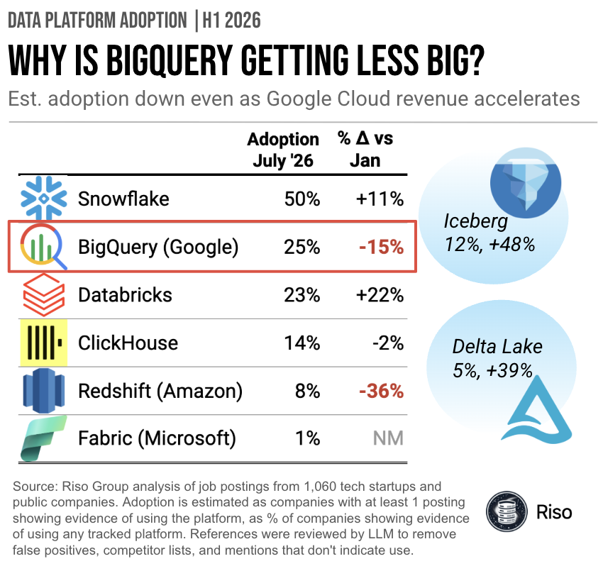

Data Platform Adoption: July 2026

Key Takeaways
- BigQuery is the surprise. Estimated adoption fell 15% in the first half of 2026, to 25% of companies, over the same period Google Cloud revenue grew 82% year over year
- Snowflake still leads at 50% and grew 11%. Databricks rose fastest among the warehouses, up 22% to 23%, but the companies that dropped BigQuery evidence almost never picked up Databricks
- Open table formats grew faster than any platform tracked: Iceberg up 48% to 12%, Delta Lake up 39% to 5%. Neither is a substitute for a warehouse
The BigQuery puzzle
Google Cloud grew 82% year over year in Q2 2026, to $24.8 billion. AWS accelerated too, up 37% to $42.2 billion, its fastest quarter in more than four years. Yet on this measure both of their warehouses lost ground: BigQuery down 15%, Redshift down 36%.
Redshift’s decline is the easier one to believe. BigQuery’s is not, and the product isn’t the obvious explanation.
One caveat worth stating plainly: cloud revenue growth right now is driven largely by AI infrastructure, not analytics workloads. Hyperscaler revenue and warehouse adoption are not measuring the same thing, and there’s no reason they have to move together.
What isn’t happening
Fabric registers at 1% here, effectively absent from this sample. DuckDB and MotherDuck don’t show up materially either, at least not yet.
And if there is a BigQuery exodus, this data doesn’t say where it went. The companies losing BigQuery evidence are not turning up as Databricks adopters. The open formats are both climbing fast, but Iceberg and Delta Lake are table formats, not warehouses, so they aren’t really substitutes.
What to watch
Databricks now sits two points behind BigQuery, close enough that the next reading could reorder them. The other thing to check is whether the BigQuery decline holds through the next update or simply reverts.
Methodology
Riso Group analysis of job postings from 1,060 tech startups and public companies, tracked from January through July 2026. Adoption is estimated as companies with at least one posting showing evidence of using the platform, as a % of companies showing evidence of using any tracked platform. References were reviewed by LLM to remove false positives, competitor lists, and mentions that don’t indicate use. Fabric is marked NM because its January base was too small to compute a meaningful change. Job postings are a proxy for adoption, not a license count: more volatile than contracts, and not comprehensive. Read the direction and relative magnitude rather than the absolute level. Cloud revenue figures are from Alphabet’s and Amazon’s Q2 2026 results, both reported in July 2026.